ComMod une posture !
Mon point de vue
Par E. Delay (Cirad Dir ES. UPR GREEN) Pour le collectif ComMod 11 sept. 2020 - Séminaire MIAT
expliciter le point de vue
mon parcours
- Géographie atypique
- Le logiciel libre
- Une thèse sur la viticulture entre Banyuls sur mer et le val di Cembra
- Un post-doc sur l'entraide et l'irrigation (P)
- Un post-doc sur la reforestation au Sahel (Grande Muraille verte)
Le Cirad
Depuis 2018
- issu des anciens instituts coloniaux
- une histoire agricole dans les Sud
ComMod, une histoire
Time line
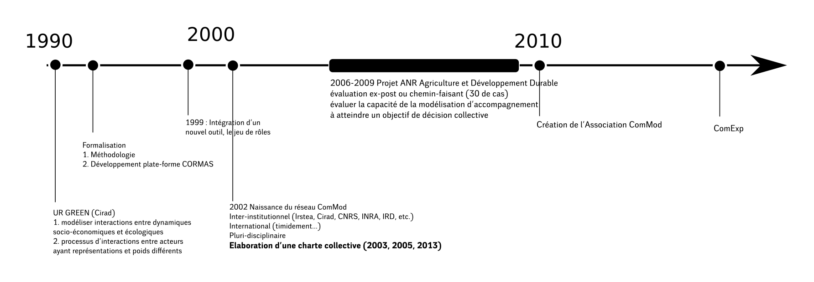Différentes communautés
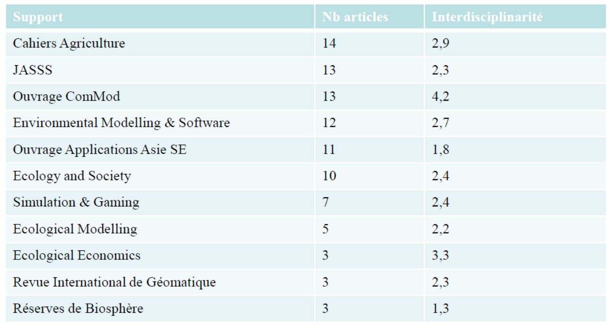Les grands principes
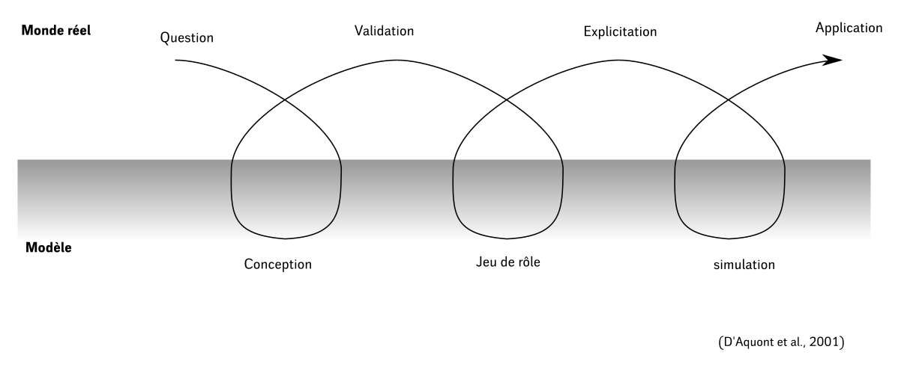Problèmes pernicieux et sciences post-normales
« a wicked problem is a problem that is difficult or impossible to solve because of incomplete, contradictory, and changing requirements that are often difficult to recognize »
Rittel 1973
« when uncertainties are either of the epistemological or ethical kind, or when decision stakes reflect conflicting purposes among stakeholders »
Funtowic et Ravertz 1993 (p. 750)
Le statut de la vérité
Questionner le statut de la vérité (Barlas and Carpenter 1990, p. 157)
- Logical empirism
- «Since the model is assumed to be an objective and absolute repre- sentation of the real system, it can be either true or false»
- Relativiste philosophical approch
- «No model can claim absolute objectivity, for every model carries in it the modeler’s world view. Models are not true or false but lie on a continuum of usefulness»
ComMod par l'exemple
Projet ProSuLi
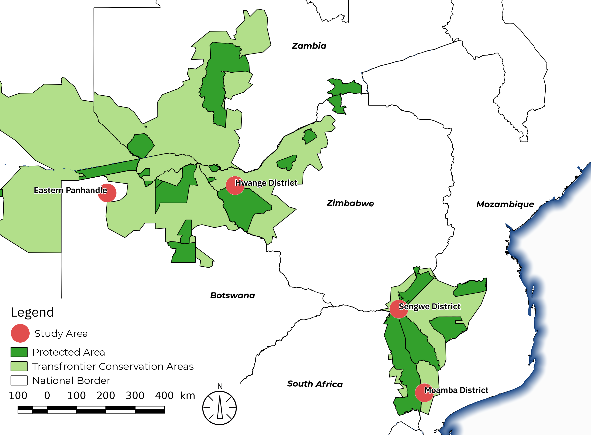
conflit Homme Faune Sauvage
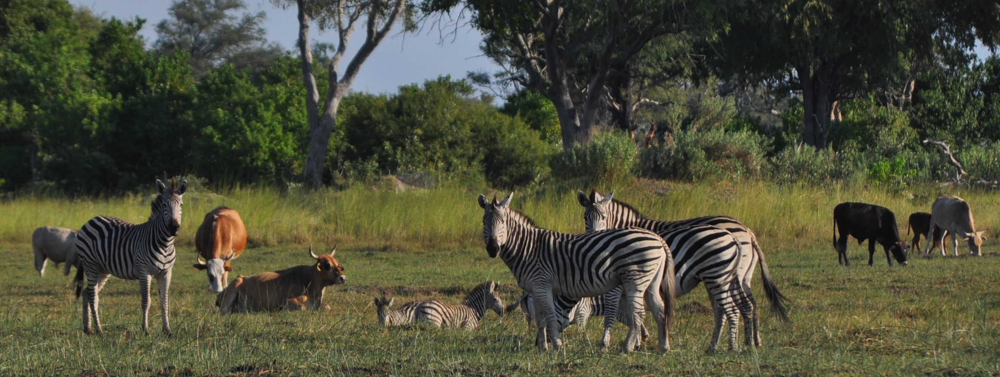 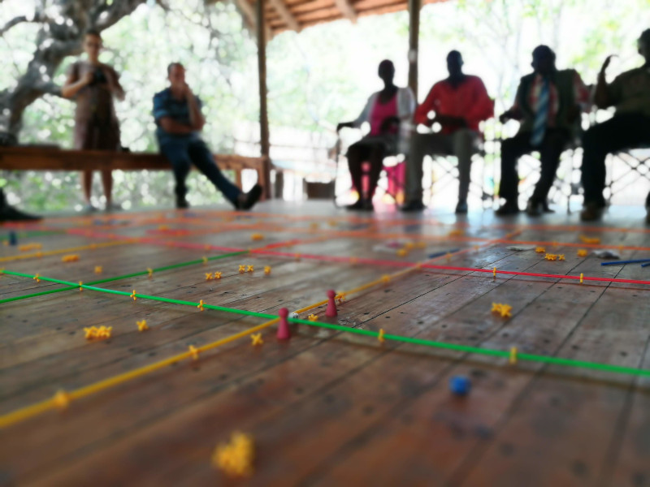Projet Doubt
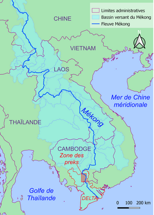 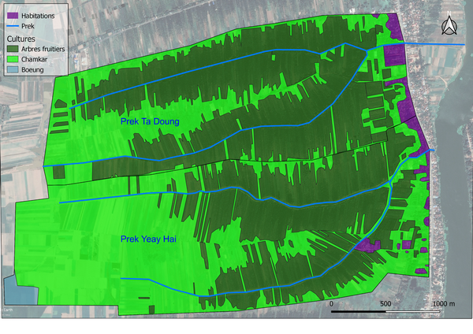Le jeu comme système de contrainte
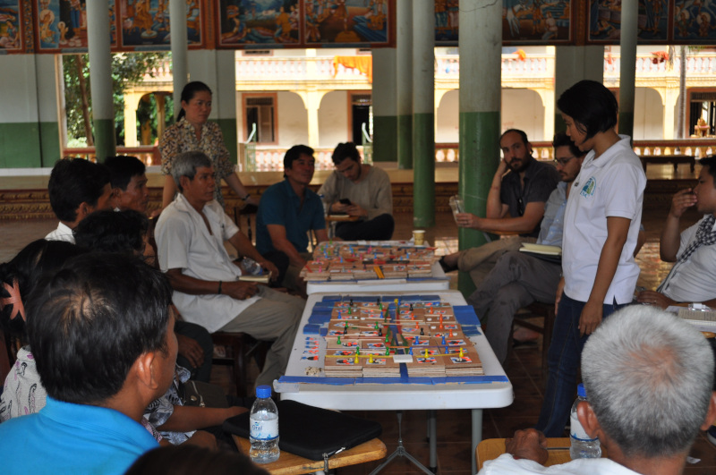 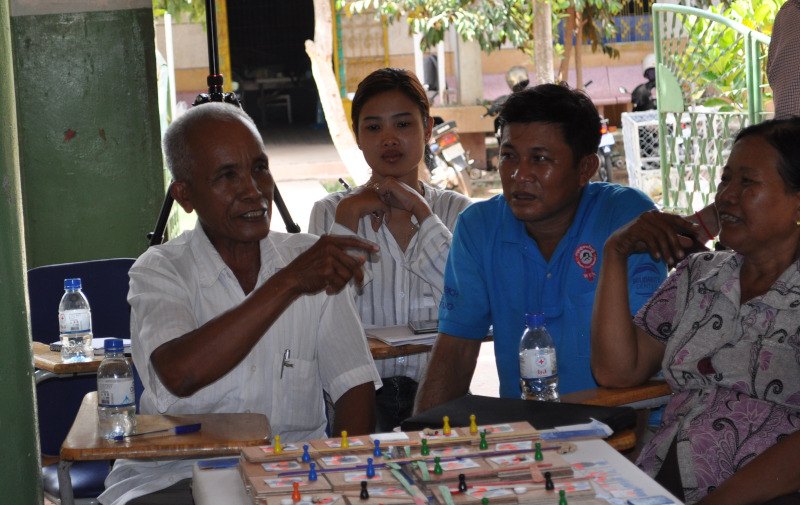Modélisation Participative et épistemologie
Il y a différentes façons de penser la modélisation participative, et ComMod est l'une d'elles.
Modélisation Participative : méthodes
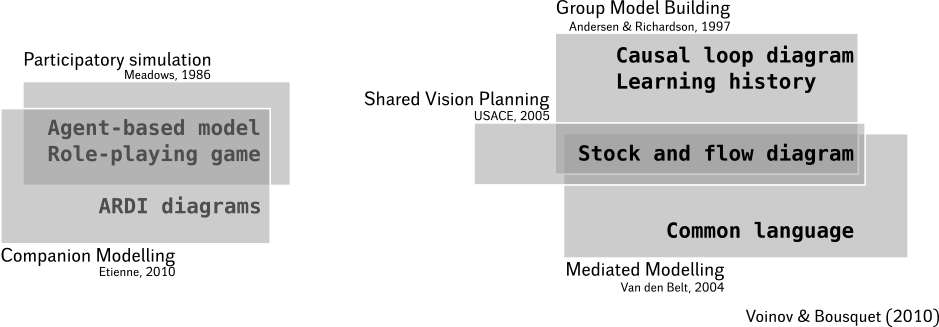Modélisation Participative : outils
Philosophie des sciences
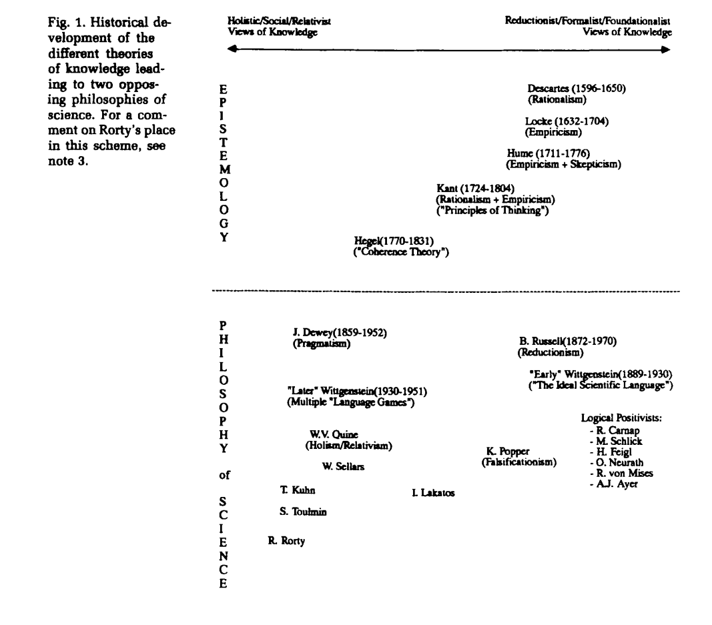Un tour d'horizon de la posture
Quelques cadres théoriques (Bousquet et al. 2009)
- Constructivisme : Favoriser une organisation apprenante (Piaget 2003)
- Diversité d'acteurs - diversité de points de vue
- Diversité dynamique dans le temps
- Pluralisme culturelle
- Construction d'un cadre interprétatif collectif
- Science post-normale : qualité de décision dans un contexte complexe
- La qualité de la décision se mesure à la qualité du processus
- Encourage le dialogue citoyen sans préciser les formes
- Connectivisme : considérer la construction de savoirs comme un processus qui se produit dans un environnement flou
- Le groupe autant que l'individu sont des organismes apprenants
- Nos compétences dérivent de notre capacité à former des connexions
Quelques cadres théoriques (Bousquet et al. 2009)
- Apprentissage collectif
- Science de gestion, l'individu est une donnée et on s'interroge sur les conditions de production du consensus (Hatchuel, 2005)
- Sciences politiques, expression des valeurs en fonction des arènes, du rôle, du status (Ostrom et al. 1994)
- La médiation et objet intermédiaire
- Le recours à un tiers pour garantir le dialogue (Guillaume-Hoffnung, 2005)
- Reconnaitre la valeur de l'autre sans nier sa différence
- Utiliser des objets intermédiaires pour garantir la communication entre acteurs hétérogènes (Star et Griesemer, 1989; Vinck 1999)
Les Objectifs
- Produire de connaissances
- Sur les systèmes de gestion de ressources naturelles et des territoires
- À destination des chercheurs ou des acteurs locaux
- Cheminement progressif et traçable vers une meilleure compréhension de processus de décision collective
- Le modèle pour mettre en dynamique des points de vue variés sur un système complexe et l’explorer
- Le modèle pour mettre en débat des représentations
- Accès à différents formats de connaissance
- Emanciper les participants
Cormas et ComMod une co-évolution
du jeu aux systèmes a base d'agents ... il n'y a qu'un pas
CORMAS by example

Interactive simulation

Cormas topics

Modéliser et apprendre
Avec une histoire commune, entrelacée avec OO !

Friendliness
Le méta-modèle CORMAS n'est pas prescriptif → proche de la description des stackholders

Un monde ouvert : transcendance
Un livre d'un anthropologue : M. Augé, 1982, “Génie du paganisme”. → La grande différence entre le monothéisme et le polythéisme :
- Monothéisme : Dieu est à l'extérieur de la création et les croyants doivent demander une modification du monde
- Polythéisme : les dieux sont à l'intérieur du monde et les croyants peuvent interagir directement avec eux
Les utilisateurs de Cormas touchent la transcendance

CORMAS avec Pharo ressemble au polythéisme car, les utilisateurs peuvent interagir avec la simulation tout comme un croyant polythéiste le ferait avec ses dieux.
les Utilisateurs peuvent entrer lentement dans Smalltalk et devenir des oracles
Vous êtes les bienvenu·e·s
... pour faire partie de l'équipe CORMAS pour jouer le "jeu de la vie".

took away
- Questionne la place du chercheur (engagement des partie prenantes, attention au rapport de forces)
- Political ecology (géographie culturelle) (lien très fort entre société et environnement)
- L'artefact se substitut au constructeur (le jeux devient un actant dans le réseau socio-technique)
- Des objectifs d'anticipation (décolonisation du futur) et d'émancipation des participants
THE END
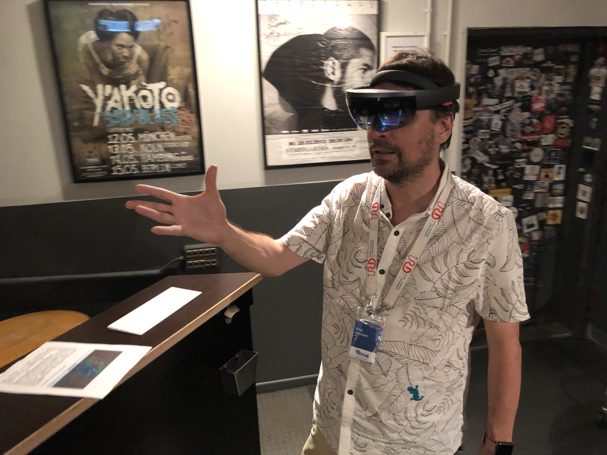S. Stinckwich (ESUG-2019)